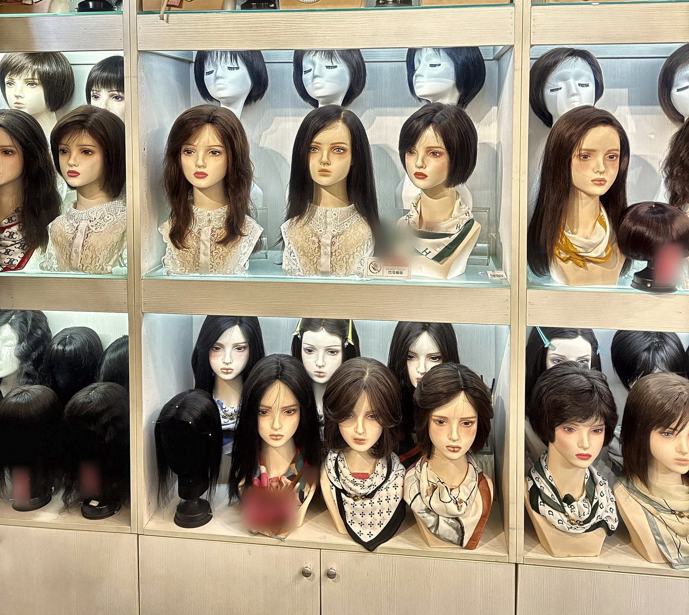
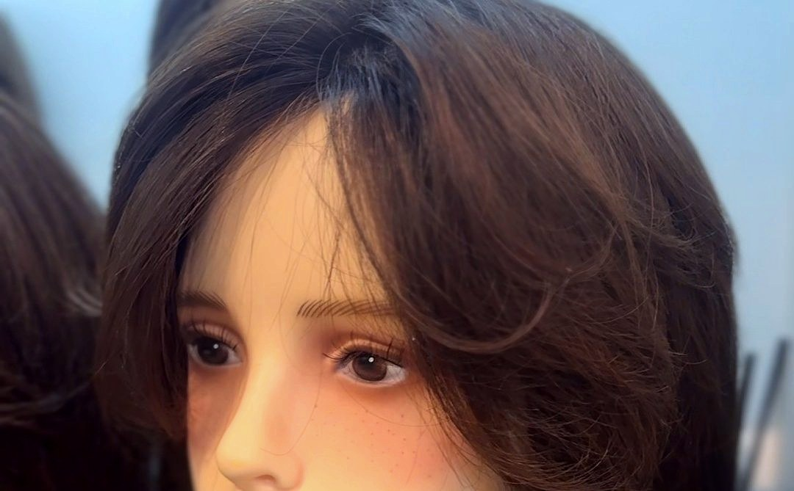

女士髮片・增髮
頭頂稀疏、髮縫寬
增髮片還是整頂假髮？
如果只是頭頂或髮縫變明顯、其他地方髮量還夠，多半先從增髮片（局部髮片）開始；整體髮量都變少、想同時遮白又換髮型，或希望每天快速整理，再考慮整頂假髮。

增髮片還是整頂假髮？
局部稀疏、其他地方髮量還夠時，先選增髮片；整體髮量變少、想完全換髮型或每天快速整理時，選整頂假髮。
增髮片保留自己的頭髮，只在頭頂或分線處補量，看起來最像「自己的頭髮變多了」；整頂假髮則一次解決髮量、髮色與造型。
本頁談的是遮蓋與配戴的選擇；落髮原因請先諮詢醫師。
怎麼挑增髮片才自然？
看四件事：髮色是否和真髮接近、分線處看起來像不像頭皮、髮量不要一次加太多、重量戴一整天不會累。
建議在店裡現場對著鏡子比對髮色，想要的話也可以到自然光下再看一次，並從側面與上方都看一次；修剪讓髮片與真髮的層次銜接，也是自然度的關鍵。
髮量可以慢慢加嗎？
可以，先從一片增髮片開始，之後再視需要加上第二片、第三片，讓髮量循序漸進地增加，看起來更自然。

頭頂變稀、髮縫變寬，先來試戴比較。女士髮片・增髮
女士髮片常見問題
頭頂稀疏、髮縫寬，該選增髮片還是整頂假髮？
局部稀疏、其他地方髮量還夠時，先選增髮片；整體髮量變少、想完全換髮型或每天快速整理時，選整頂假髮。
產後落髮可以戴增髮片或假髮嗎？
可以把增髮片當作過渡期的遮蓋選擇；落髮原因與會持續多久，建議先諮詢醫師。產後時間有限，可以先 LINE 預約，到店一次試完。
髮量可以慢慢加嗎？
可以，先從一片增髮片開始，之後再視需要加上第二片、第三片。
可以帶家人一起來嗎？
可以。試戴時家人也歡迎陪同，幫你從旁邊和後面看。